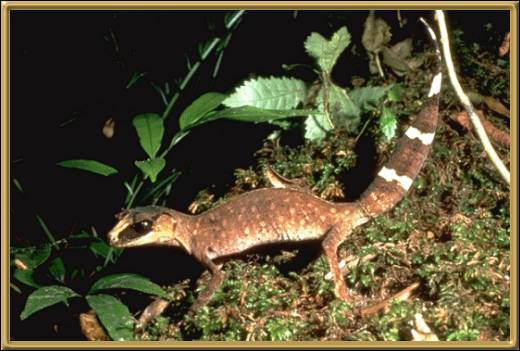

These Geckos come from Queensland and their proper name is
Carphodactylus laevis. As far as I've been able to determine this species is secure.
It seems that only the original tail of these Geckos is striped, when they
regenerate their tail it is the same spotted, camouflaged coloration as their body.
Photographer: Unknown